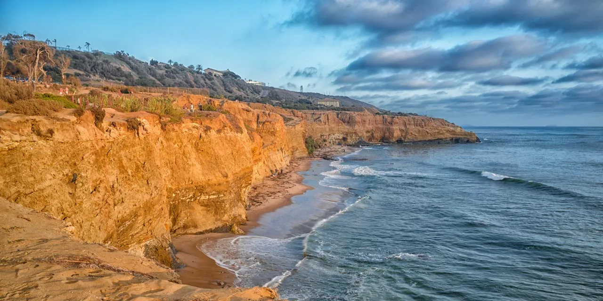

San Diego
San Diego is a city located in SoCal, with a very chill vibe and days full of sun with cool breezes. It's a place where you can rock a sweather or t-shirt in the same week. With a very diverse demographic, it is full of lots of different backgrounds and interesting people.
- State: California
- Country: United States of America
- Population:1.39 million
- Coordinates: 32.7157° N, -117.1647° W
- Flag: